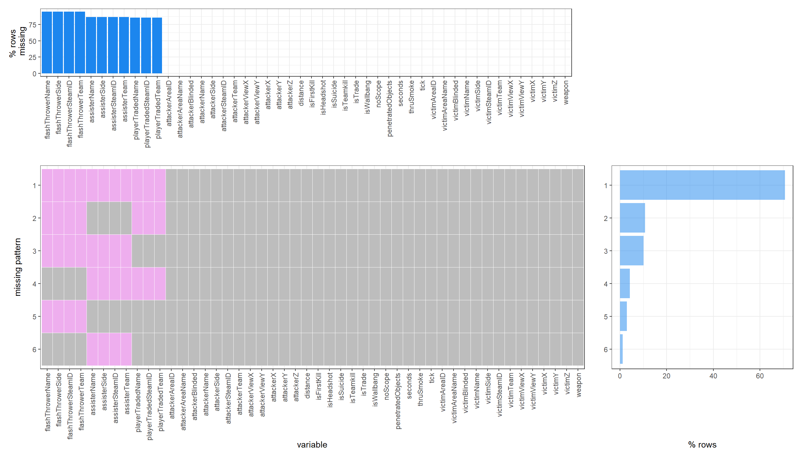

Chapter 4 Missing values
We’ll have a look at the missing data. For this analysis, be chose a subset of 30 random matches for a reasonable processing time. Of all the matches data, only the kills and damages data frames contained missing data.
4.1 Kills data
The kills data frame contains information about each confirmed kill by any of the 10 players of both teams.  (Variables beginning with ‘flash’)
Flash grenades are thrown to temporarily blind the enemy players. The missing data is expected: when a player is killed, it has not necessarily been flashed by a flash grenade before (patterns 1,2,3,5 in the graph below). We can see that the vast majority of kills are done without the victim being flashed. Less than 10 percent of the kills are done with the help of flash grenades (patterns 4,6 in the graph below).
(Variables beginning with ‘assist’)
Similarly less than 15 percent of kills are helped with assists (patterns 2,5 in the graph below). An assist occurs when a teammate deals more than 40 points of damage to a player before that player is killed. The teammate then gets the assist for dealing damages, thus helping the kill.
(Variables beginning with ‘playerTraded’)
A player is traded when one of his teammates get an immediate revenge on the enemy player who got the initial kill (patterns 3,5,6 in the graph below). Again, about 15 percent of the kills are traded. A trade is important because it ensures that the other team does not get the numerical advantage.
Surprisingly, there are no complete cases the 30 sampled matches i.e there are no kills with all three previous points at the same time

4.2 Damages data
The damages data frame contains information about each damage a player receives. A damage results in less health points.
 Most damages (98 percent) are inflicted by a player (bullet or grenade damages). But about 2 percent of damages are not dealt by a player. Those are caused by the game environment: falling damage or bomb damage (no player is linked to a planted bomb). Pattern 2 shows the affected variables
Most damages (98 percent) are inflicted by a player (bullet or grenade damages). But about 2 percent of damages are not dealt by a player. Those are caused by the game environment: falling damage or bomb damage (no player is linked to a planted bomb). Pattern 2 shows the affected variables